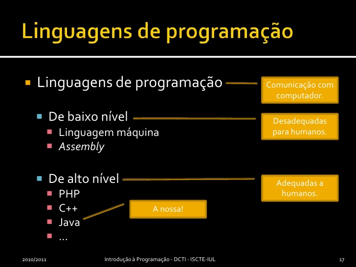

Sobre a Terceira Geração
Transistors e coisa do passado.
A terceira geração inicia-se com a introdução dos circuitos integrados (transístores, resistores, díodos e outras variações de componentes eletrônicos miniaturizados e montados sobre um único chip) aos computadores.
Após o surgimento desses circuitos, no final da década de 50, eles foram aprimorando-se até chegar ao estágio de adaptação aos computadores.
Os custos de produção de um computador começavam a cair, atingindo uma faixa de mercado que abrangia empresas de médio porte, centros de pesquisa e universidades menores.
Uma nova linguagem foi desenvolvida pelo Grupo de Cambridge: a CPL.
O Burroughs B-2500 foi um dos primeiros modelos dessa geração.
O PDP-5, produzido pela DEC, foi o primeiro minicomputador comercial e o INTEL 4004 o primeiro microprocessador.
Alguns de seus componentes a unidade calculadora e a memória.
Além disso, diversos modelos e estilos foram sendo lançados nessa época: IBM-PC, Lotus 1-2-3, Sinclair ZX81/ZX Spectrum, Osborne1 e os famosos IBM PC/XT.
O PC/XP usava o sistema operacional PC/MS-DOS, uma versão do MS-DOS desenvolvida para a IBM pela Microsoft de "Bill Gates".
Outro evento importante desta época foi que a IBM passou a separar a criação de hardware do desenvolvimento de sistemas, iniciando o mercado da indústria de softwares. Isto foi possível devido a utilização das linguagens de alto nível nestes computadores.
